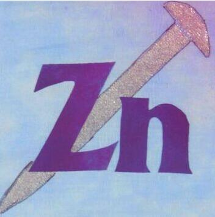

<!--
  Generated template for the MessagePage page.

  See http://ionicframework.com/docs/components/#navigation for more info on
  Ionic pages and navigation.
-->
<ion-header>

  <ion-navbar color="dark">
    <ion-title>{{title}}</ion-title>
  </ion-navbar>

</ion-header>


<ion-content class="bg-color">
	<ion-searchbar></ion-searchbar>
	<ion-list>
		<ion-item-sliding>
			 <ion-item>
			      <ion-avatar item-start>
			        
			      </ion-avatar>
			      <h2>Zn</h2>
			      <p>This town ain't big enough for the two of us!</p>
			      <ion-note item-end>3:43 pm</ion-note>
    		</ion-item>
    		<ion-item-options side="right">
    		<button ion-button color="light">
        		标记未读
      		</button>
      		<button ion-button color="danger">
        		删除
      		</button>
    		</ion-item-options>
		</ion-item-sliding>
	</ion-list>

</ion-content>
